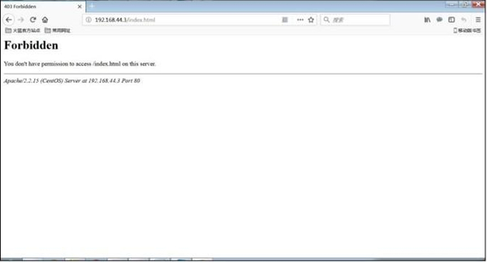

SELinux安全上下文的修改和设置（chcon和restorecon命令）
chcon 命令格式如下：
[root@localhost ~]# chcon [选项] 文件或目录
选项：- -R： 递归，当前目录和目录下的所有子文件同时设置；
- -t： 修改安全上下文的类型字段，最常用；
- -u： 修改安全上下文的身份字段；
- -r： 修改安全上下文的角色字段；
举个例子：
[root@localhost ~]# echo'test page！！！' >> /var/www/html/index.html
#建立一个网页文件，并写入“test page！！！”

图 1 访问 apache 测试页
[root@localhost ~]# ls -Z /var/www/html/index.html
-rw-r--r--. root root unconfined_u:object_r:httpd_sys_content_t:s0 /var/www/html/index.html
#这个网页文件的模式类别是httpd_sys_content_t
[root@localhost ~]# seinfo -t I grep var_t
#查询SELinun中所有的类型、发现有一个类型叫var_t
[root@localhost ~]# chcon -t var_t /var/www/html/index.html
#把网页文件的类型修改为var_t类型
[root@localhost ~]# ls -Z /var/www/html/index.html
-rw-r--r--. toot root unconfined_u:object_r:var_t:s0 /var/www/html/index.html
#这个网页的类型已经被修改了

图 2 拒绝访问
这时网页就会提示权限拒绝，这里我们已经知道是安全上下文不匹配惹的祸！当然，我们可以通过 chcon 命令修改回来就可以修复。不过，我们还有一个命令 restorecon，这个命令的作用就是把文件的安全上下文恢复成默认的安全上下文。SELinux 的安全上下文设定非常完善，所以使用 restorecon 命令就可以修复安全上下文不匹配所引起的问题。
restorecon 命令格式如下：
[root@localhost ~] # restorecon [选项】 文件或目录
选项：- -R：递归.当前目录和目录下所有的子文件同时恢复；
- -V：把恢复过程显示到屏幕上；
例如：
[root@1ocalhost ~]# restorecon -Rv /var/www/html/index.html
restorecon reset /var/www/html/index.html context
unconfined_u:object_r:var_t:s0->unconfined_u:object_r:httpd_sys_content_t:s0
#这里已经提示了安全上下文从var_t恢复成了httpd_sys_content_t
[root@1ocalhost ~]# ls -Z /var/www/html/index.html
-rw-r--r--. root root unconfined_u:object_r:httpd_sys_content_t:s0 /var/www/html/index.html
#查看一下，安全上下文已经恢复正常了.网页的访问也已经恢复正常了
关注公众号「站长严长生」，在手机上阅读所有教程，随时随地都能学习。内含一款搜索神器，免费下载全网书籍和视频。

微信扫码关注公众号